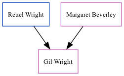

The child of Reuel Wright and Margaret BeverleyGil Wright was the fifth cousin once-removed on the father's side of Nigel Horne. On Dec 6, 2020, she lived in Sydney, New South Wales, Australia.
Parents
Family Tree

Generated by ged2site. Last updated on Nov 13, 2024